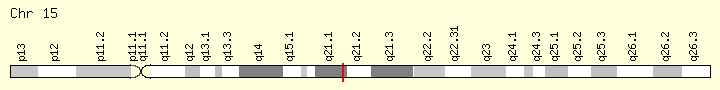
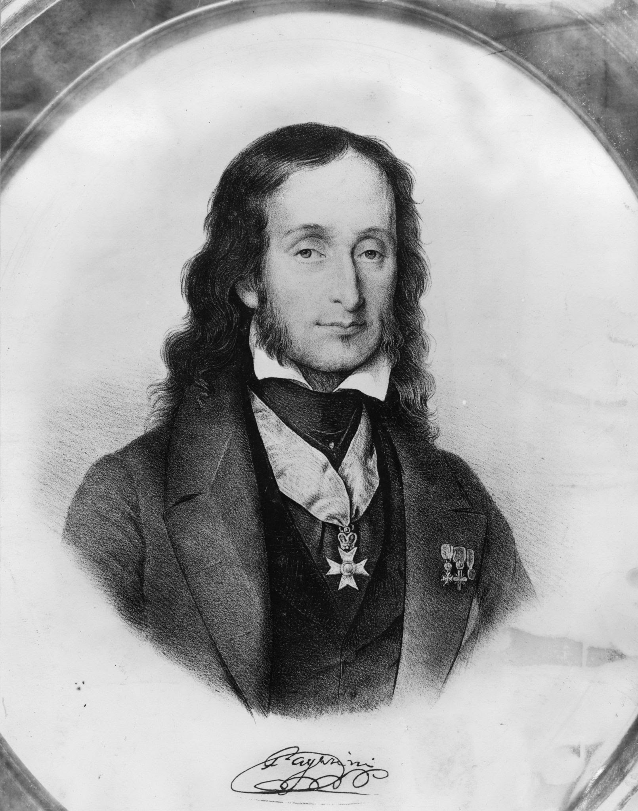

La sindrome di Marfan
Innanzitutto, cos’è una sindrome? Nel linguaggio medico viene definito tale un complesso più o meno caratteristico di sintomi (alterazioni percepibili dal paziente) senza un preciso riferimento alle cause e alla loro comparsa.La sindrome di Marfan prende il nome dal pediatra francese Antoine Marfan che la scoprì nel 1896.
È una malattia genetica alquanto rara ed è causata da una anomalia nella produzione del gene FBN1, nel cromosoma 15, che codifica la proteina detta “fibrillina 1”.
Questa particolare sindrome è pericolosa in quanto colpisce i tessuti connettivi, come il sangue (il quale arriva quasi ovunque nel copro), provocando così disturbi al cuore, ai vasi sanguigni, ai legamenti (che collegano le ossa fra loro), alle ossa stesse, agli occhi e perfino ai polmoni.
I disturbi legati alla sindrome di Marfan hanno la particolarità di poter “mostrarsi” in ogni età (in particolare dopo la tarda infanzia), variando molto tra individui consanguinei. Per questi motivi ci sono sia forme lievi che gravi e colpiscono in media una persona su 5000.
Le principali caratteristiche della sindrome sono un’altezza anormale, l’aracnodattilia, la presenza di difetti cardiaci e la dislocazione del cristallino nell’occhio.
Analisi della malattia
La sindrome di Marfan colpisce un particolare gene nel cromosoma 15, il gene FBN1.Questo gene codifica per un membro della famiglia delle proteine della fibrillina e, grazie a questo, vengono sintetizzate la componente della matrice extracellulare fibrillina-1 e un ormone proteico chiamato asprosina. La fibrillina-1 è una glicoproteina della matrice extracellulare è un componente fondamentale di particolari microfibrille che legano il calcio. Queste microfibrille forniscono un supporto strutturale resistente alla forza nel tessuto connettivo elastico, denso e fibroso, presenti tutti e tre in tutto il corpo. È stato dimostrato che l'asprosina, secreta dal tessuto adiposo bianco, regola l'omeostasi del glucosio. Il gene è lungo circa 257,5 mila pb, avvengono delle mutazioni puntiformi al livello dell’FBN1-201, la parte del gene che codifica riguardo alla trascrizione della fibrillina, e non al livello dei regolatori o dei promotori.
 La sindrome di Marfan, però, non è l’unica ad attaccare il gene FBN1: variazioni di questo gene possono portare anche alla sindrome di Weill-Marchesani, che come la s. di Marfan agisce sulla statura del soggetto, però rendendolo più basso, ha come conseguenze anche la rigidità articolare o una miopia, all’ectopia lentis, che si occupa di uno spostamento del cristallino, alla sindrome da attivazione macrofagica (MAS), potenzialmente letale, e alla sindrome di Sanjad-Sakati (SSS), che porta a microcefalia, ritardi della crescita e dimorfismi facciali.
Ritornando alla s. di Marfan, possiamo dire che, anche se è stata scoperta nel 1896, solo nel 1981 sono state avanzate le prime ipotesi a livello biochimico, poiché si sono rilevate anomalie delle proteine del tessuto connettivo o della sostanza fondamentale (McKusick), anomalie nella struttura del collagene (Boucek) e nella sintesi dell’acido ialuronico, un glicosamminoglicano che determina l’idratazione e l’umidità della sostanza fondamentale, una sostanza intercellulare presente nel tessuto connettivo(Appel). Solo nel 1992, però, si è arrivato alla definizione della sindrome di Marfan come un disturbo che attacca L’FBN1, solo grazie a A. Superti-Furga, M. Raghunath e P. J. Willems che andarono ad analizzare la sintesi di fibrillina e decorina in fibroblasti di un paziente con sindrome di Marfan neonatale fatale.
Segni e sintomi
La sindrome di Marfan, come spiegato in precedenza, attaccando la produzione di fibrillino, ha un alto riscontro nel fenotipo di un soggetto malato, in cui lo spettro dei segni e dei sintomi è molto diversificato.Per prima cosa dobbiamo dividere la normale sindrome di Marfan rispetto alla sindrome di Marfan neonatale, molto diverse tra di loro.
Riguardo alla s. di Marfan neonatale c’è un po’ da dire: questa variante della sindrome colpisce circa il 10 % dei soggetti affetti, e i sintomi si manifestano intensivamente e gravemente già in giovane età. Il primo segno di questa malattia, che non deve essere confusa con la sua sorella molto meno letale, sono delle anomalie craniofacciali, cioè che vengono riscontrate a livello della testa e del viso, in questo caso anche a livello degli occhi, tra cui iridodonesi (un tremolio dell’iride che avviene quando la pupilla si muove, a causa di un deficit nella parte del sostegno), megalocornea, ectopia lentis(spostamento del cristallino), padiglione auricolare accartocciato e un alta presenza di cute in eccesso. Oltre che al livello craniofacciale, si possono notare anche vari problemi a livello di tutto il corpo, come contratture a tutte le articolazioni, efisemi polmonari e gravi valvulopatie, come il prolasso, o uscita, della valvola mitrale e della valvola tricuspide, situate l’una all’ingresso dell’aorta, l’altra all’ingresso dell’arteria polmonare, e tutto ciò può portare a un’ipertensione delle arterie polmonari. Altri problemi della s. di Marfan neonatale sono anche i tratti distintivi di quella normale: il petto carentato, l’aracnodattilia e la dolicotenomelia, che approfondiremo in seguito affrontando la sindrome di Marfan “classica”. La malattia è molto grave: così come le sindromi di Patau ed Edward, con la differenza che quelle erano malattie legato al numero di cromosomi, anche la sindrome di Marfan neonatale ha una bassissima aspettativa di vita: il 95% dei soggetti muore prima dell’ano di vita, la vita media è di 16 mesi e gli “anomali” che sono vissuti più a lungo hanno appena raggiunto l’età di 11 anni.
Riguardo alla s. di Marfan n. abbiamo pochi dati, a causa soprattutto della bassa speranza di vita come si è stato evidenziato prima, mentre, per fortuna o purtroppo, abbiamo molti più dati riguardo la s. di Marfan classica.
Il primo apparato che possiamo andare ad analizzare è quello muscolo-scheletrico: i soggetti sviluppano sia un’altezza che una magrezza di gran lunga superiore ai loro coetanei, oltre che ha riportare segni di una dolicostenomelia, degli arti estremamente allungati rispetto alla lunghezza del tronco. La muscolatura, al contrario della lunghezza degli arti, è invece molto ridotta e il paziente che è affetto da SDM fa molta fatica anche ad acquisire massa muscolare, anche se non è presenta un’ipoplasia (sviluppo incompleto o mancante) al tessuto muscolare e, oltre ai problemi qua sopra elencati, hanno anche una bassa resistenza allo sforzo fisico.
Uno dei segni cardine della SDM è sicuramente l’aracnodattilia, cioè una condizione in cui dita di mani e piedi sono molto più lunghe del normale, andando anche a superare la lunghezza del palmo della mano o dell’arco del piede, e causa anche un’ipermobilità delle dita ed è legata alla mancanza di fibrillina nei legamenti.
I problemi invece legati alle ossa sono invece la malattia ossea di Paget, la protrusione dell’acetabolo, l’ectasia durale, molto legata alla stanchezza cronica, e vari tipi di degenerazione ossea, come l’osteopenia e l’osteoporosi. Riguardo le prime tre condizioni possiamo approfondire un po’ di più: la malattia ossea di Paget causa una deformità ossea, a causa di un eccesivo stimolo degli osteoblasti, che rende le ossa più grandi e morbide; la postruzione dell’acetabolo è uno spostamento della testa del femore, rendendo impossibili movimento a livello dell’anca e dolori nella zona pelvica; l’ectasia durale è una degenerazione dovuto a un eccessivo rivestimento di dura madre, una delle meningi, attorno alla colonna vertebrale, a livello dei lombi, e ciò può portare a una vasta gamma di problemi, come cefalea, astenia, dolori nella zona ano genitale e incontinenza.
Altre deformità famosi sono quelle del petto, causate da un sovrasviluppo delle costole, e viene chiamato petto carenato e, talvolta, impediscono il raggiungimento di una sufficiente capacità polmonare, per cui il soggetto deve essere operato. Sono presenti anche scoliosi e cifosi a livello della colonna vertebrale e, in molti casi, anche coesistenti. A livello degli arti inferiori troviamo anche qua una vasta gamma di problemi, dal più comune piede piatto, a una flessione del tallone verso l’esterno. Anche l’alluce valgo è un problema che può essere causato dalla SDM, causando naturalmente problemi a tutta la pianta del piede, e non solo al metatarso dell’alluce, così come anche il genu recurvatum, dove le ginocchia sono spostate all’indietro rispetto all’ipotetico piano verticale dell’arto inferiore.
Nella zona odonto-mandibolare, invece, possiamo trovare micrognazia, una mandibola più piccola del normale, retrognazia, una mandibola più indietro della norma, un palato ogivale, molto stretto, con problemi di malocclusione dentale, cioè l’esistenza di una errata chiusura delle arcate dentali dove i denti si vanno ad accavallare. Tutti questi problemi legati alle vie aeree alte, uniti alla già enunciata ipoplasia muscolare e a un’ipoplasia mascellare importante, come si potrebbe trovare in questi soggetti, possono portare alla OSAS, un’apnea notturna di tipo ostruttivo, che si può verificare anche ripetute volte per notte, apportando un blocco parziale o completo alle vie respiratorie.
Se nell’apparato locomotore la sindrome di Marfan fa il bello e il cattivo tempo, questo avviene anche a livello cardiovascolare: la porzione ascendente dell’aorta si dilata, indebolendo la tonaca media e, a causa di questo indebolimento della parete, si alimenta un circolo vizioso che fa sempre più fatica a reggere la pressione sanguigna, facendo diventare questa dilatazione prima aneurismatica, poi ectasia. Organi Negli stadi questa ectasia può portare a una dissecazione dell’aorta, cioè in uno stato in cui il sangue fluisce tra le pareti del vaso e gli organi interni.
Altri problemi legati al cuore li possiamo ritrovare nelle insufficienze della valvola mitrale e della tricuspide, che come spiegato prima sono fuoriuscite delle valvole, e sono causate dalla rottura delle corde tendinee o dall’uscita dei lembi. Questi problemi, a differenza degli altri, possono portare all’insufficienza cardiaca. A causa della SDM sono presenti anche delle aritmie ventricolari molto importanti, ad esempio la tachicardia ventricolare (che ha come valori minimo circa 150 bpm) o l’extrarisole, un battito cardiaco prematuro che altera la successione dei battiti. Anche in assenza dei disturbi presentati qui in alto, però, il soggetto affetto da SDM è esposto a un maggiore rischio di morte cardiaca improvvisa e di arresto cardiaco, oltre a una maggiore possibilità di sviluppare una endocardite infettiva, cioè uno sviluppo di uno strato eccessivo dell’endocardio.
La terza zona prediletta dalla SDM è sicuramente il bulbo oculare, con particolare attenzione al cristallino, che, come possiamo facilmente ipotizzare, è sorretto da fibrillina. I problemi dovuti dalla dislocazione del cristallino posso essere molto vari e possono avvenire a qualsiasi età, come nel caso del distacco della retina in età infantile. La dislocazione del cristallino, oltre a poter portare al dislocamento della retina, può anche avere conseguenze più o meno gravi, a seconda dell’età in cui avviene: ci sono casi di miopia, presbiopia, astigmatismo e ipermetropia a livello visivo, tutte condizioni che rendono la visione più difficili in determinate situazioni.
A livello oculare è presente anche lo strabismo, di qualsiasi genere, il colombona dell’iride, una malformazione dell’iride, la cataratta e il glaucoma (danni a nervi ottici) a qualsiasi età.
Altri problemi si possono riscontrare in tutto il corpo: a livello polmonare si sviluppa lo pneumotorace, un’accumulazione di aria del cavo pleurico, e l’enfisema, in cui c’è un aumento della quota d’aria presente in generale; a livello cutaneo possono comparire strie cutanee sugli arti, sia superiori che inferiori; a livello della coagulazione sanguigna ci sono problemi riparativi, infatti con alterazioni nella forma delle piastrine avvengono eccessivi sanguinamenti nei casi di lesioni; nel 32% dei soggetti malati, oltre alle decine di problemi qua sopra elencati e provati a spiegare, c’è la presenza di ernie, fuoriuscite delle viscere dalle cavità che le dovrebbero contenere, a livello inguinale, iatale e ombelicale; i soggetti con SDM, infine, hanno problemi anche al sistema digerente, essendo predisposti anche alla malattia da reflusso gastroesofageo.
La Diagnosi
La sindrome di Marfan non è sempre facile da identificare. I segni (caratteristiche rilevabili dal dottore) più identificabili sono l’alta statura, le gambe e le braccia lunghe, le dita affusolate e lunghe, lo spostamento del cristallino, l’essere soggetto a lussazioni e le alterazioni della colonna vertebrale o del palato.Nella gran parte dei casi la diagnosi si basa su esami fisici e su una valutazione della salute degli individui all’interno dell’albero genealogico. Questi esami sono: ascolto del cuore, controllo di eventuali smagliature e ricerca di caratteristiche tipiche della sindrome. Infine possono essere richiesti esami aggiuntivi come una visita oculistica, un ecocardiogramma, una radiografia del torace e una angiografia a risonanza magnetica per evidenziare l’interno dell’aorta.
Importante può poi essere lo score sistemico dove in base a diverse caratteristiche strutturali del paziente si assegna un “punteggio”.
Nonostante ciò solo un’indagine genetica ad altissima sensibilità garantisce una diagnosi precisa.
La Possibili Cure
Attualmente non conosciamo una cura per la sindrome di Marfan e le terapie sono focalizzate sulla gestione dei disturbi e sulla riduzione del rischio di complicazioni. Importante è l’utilizzo di farmaci betabloccanti per controllare la pressione sanguigna con l’allargamento e l’indebolimento dell’aorta, anche se ultimamente sono divenuti importanti nuovi farmaci come gli ACE inibitori, che governano l’ipertensione.Vi è inoltre una terapia chirurgica rivolta alla correzione della dilatazione dell’aorta in modo da evitare la sua dissezione e conseguente apertura dei tessuti. Tuttavia dopo l’intervento è sempre necessario seguire una terapia anticoagulante orale, nonostante il rischio tromboembolico per tutta la vita. La mortalità tuttavia è comunque alta.
Importanti per la cura sono l’intervento di diversi specialisti come i genetisti, cardiologi, oculisti, chirurghi e pediatri.
Alcuni Fun Fucts
Dopo aver letto questo artiolo potreste aver pensato che gli affetti da questa sindrome siano stati impossibilitati ad avere successo, beh vi state sbagliando...Ecco qualche esempio! Nicolò Paganini:
Niccolò Paganini è stato un violinista, violista, chitarrista e compositore italiano, tra i più importanti esponenti della musica romantica.Si ipotizza che Paganini fosse affetto dalla sindrome di Marfan. Questo spiegherebbe l'aracnodattilia (dita estremamente lunghe e mobili), che gli permise di arrivare a livelli di esecuzione tecnica insuperati.
Il viso era cereo e gli occhi rientrati nelle orbite; aveva perso tutta la dentatura a causa del mercurio somministrato per curare la sifilide, così facendo la bocca gli era rientrata. D’altro canto, naso e mento si erano avvicinati, pertanto veniva spesso associato al vampirismo; come se non bastasse, egli morì tubercolosi.
Abraham Lincoln:
Presentato come il padre della democrazia moderna, Abramo Lincoln è una delle figure politiche e storiche più famose in America. Ha servito come sedicesimo presidente del paese. Sono celebri i suoi sforzi per abolire la schiavitù e unire il paese.I disegni e le immagini indicano che il presidente americano era affetto dalla sindrome di Marfan. Era infatti molto alto e soffriva di peso costante e perdita muscolare. Tra gli altri sintomi Aveva vi sono struttura ossea facciale allungata, in particolare braccia e dita.
Javier Botet:
L'attore spagnolo Javier Botet è noto per aver interpretato personaggi in film horror caratterizzati da deformità fisiche senza effetti speciali, tutto solo grazie alle peculiarità della sindrome di Marfan. Alcuni dei suoi ruoli più famosi sono: covenant (in “Alien”), slenderman (in “slenderman”), hobo (in “IT”) e lo spettro (in “il trono di spade” 8:3)All'età di cinque anni, gli fu diagnosticata la sindrome. L'iperlassità di alcuni tessuti corporei causata dalle condizioni di Botet gli ha conferito dita estremamente lunghe e sottili oltre ad una corporatura alta ed esile (2,01m per 56kg).